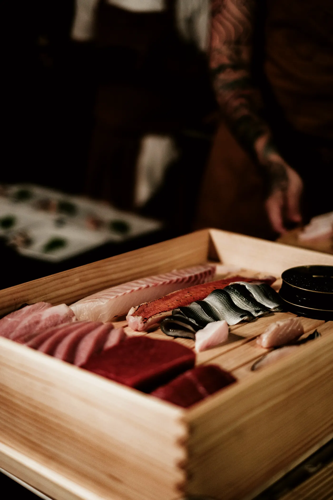
Akami
Atum bluefin, shoyu envelhecido em cedro e wasabi ralado na hora, sobre arroz ainda morno.
R$ 42
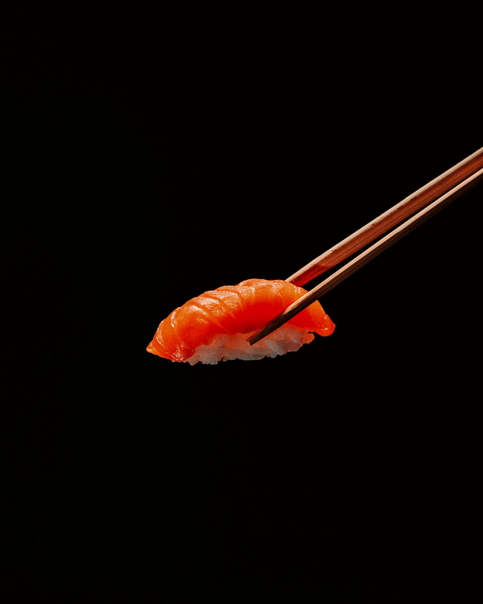
名残 nagori — no calendário da cozinha japonesa, o fim da estação: o último e mais concentrado sabor de um ingrediente antes de ele desaparecer do ano.
Balcão de doze lugares em São Paulo. Técnica japonesa, pescados e cítricos brasileiros, uma sequência por noite.
Um balcão de doze lugares e uma sequência por noite. A cozinha começa às cinco da tarde, quando o peixe chega, e termina quando a última peça é servida. Nunca antes.
A técnica é japonesa e não se negocia: arroz temperado com vinagre envelhecido, corte contra a fibra, o intervalo exato entre a mão do chef e a sua. O que muda é a origem. O robalo vem de Ubatuba, o limão vem de Cravinhos, a pimenta vem do Pará.
Nada aqui é decorativo. Se um elemento não muda o sabor, ele não entra no prato.
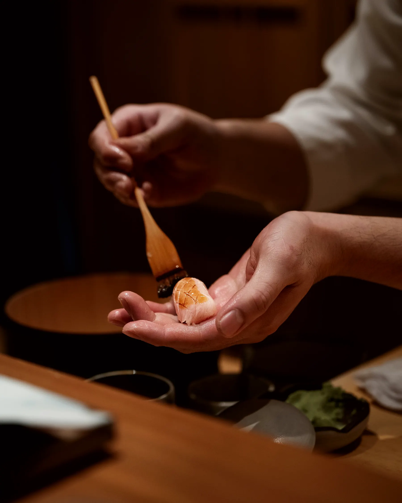
Confie no chef.
Você não escolhe. Nós escolhemos por você, todas as noites, a partir do que chegou do mar naquela manhã. A sequência muda; a exigência, não. Cada peça é entregue direto na sua frente, no segundo em que está pronta. E é para ser comida nesse segundo.
R$ 490 por pessoa
Fora da sequência, oito peças ficam disponíveis para quem senta nas mesas do salão. Estas são as quatro que nunca saem.

Atum bluefin, shoyu envelhecido em cedro e wasabi ralado na hora, sobre arroz ainda morno.
R$ 42
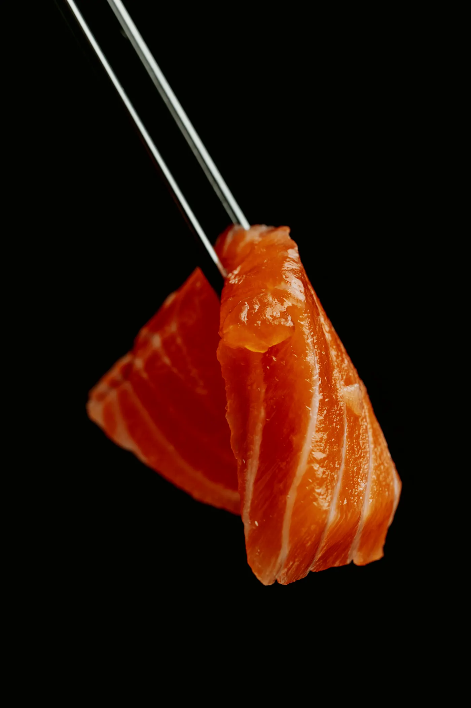
Salmão maturado quatro dias, ponzu de limão-cravo, azeite de trufas e flor de sal.
R$ 38
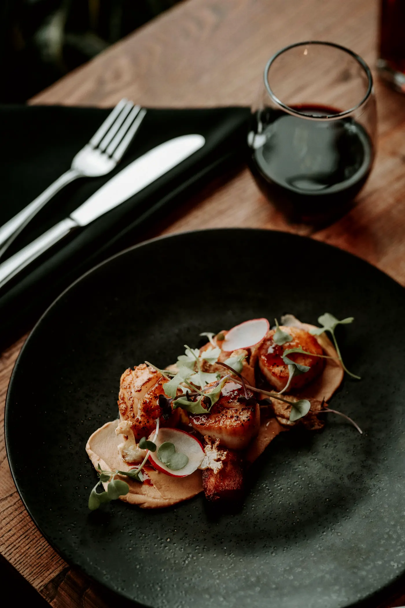
Vieira selada no ferro, yuzu kosho e óleo de cebolinha queimada.
R$ 46
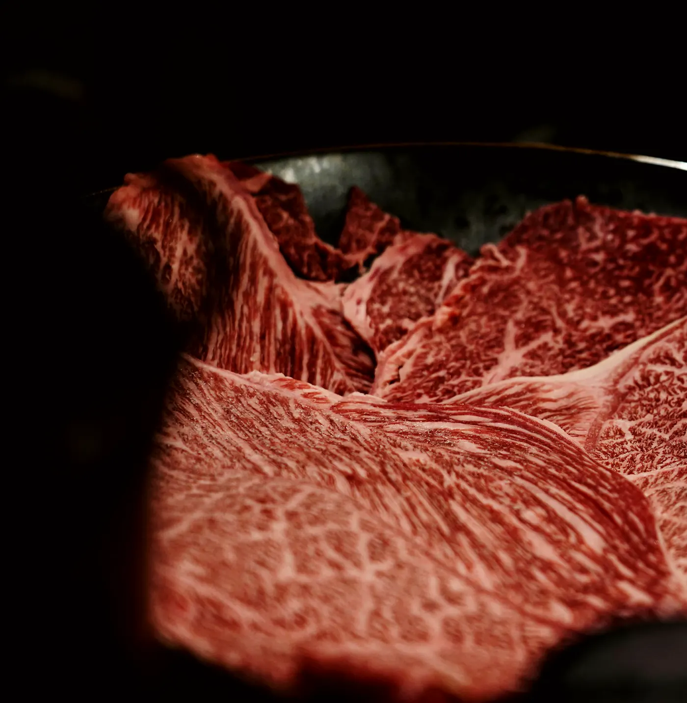
Wagyu A5 tocado pela brasa, tare de tucupi negro reduzido e flor de sal.
R$ 58
Não fazemos fusão. Fazemos cozinha japonesa com o que este país tem de melhor. E o que este país tem de melhor raramente precisa atravessar o oceano.
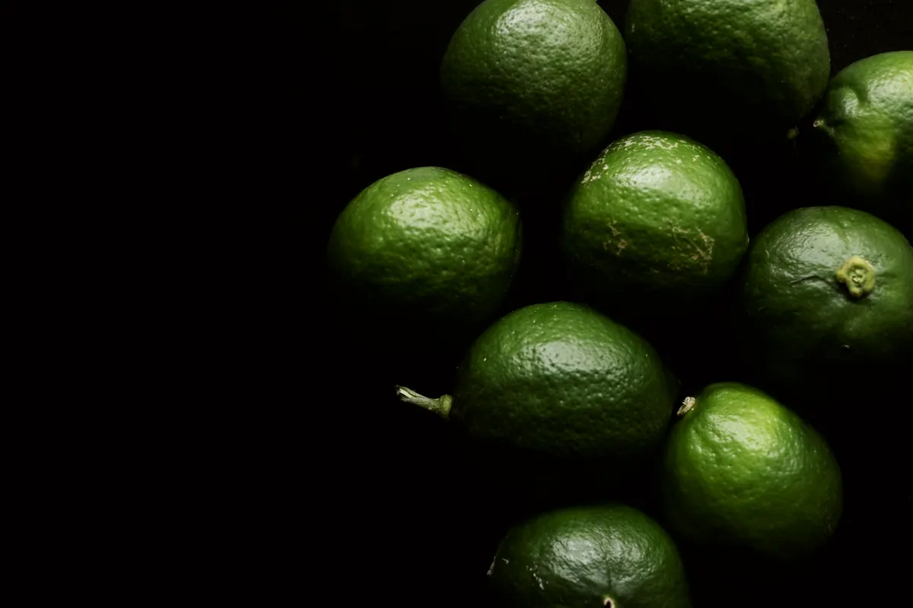
Cravinhos, interior de São Paulo
Onde o yuzu não chega, o limão-cravo responde: mesma acidez alta, aroma mais quente e mais doce. Base de todos os nossos ponzus.
Baixo Tocantins, Pará
Aroma sem ardência. Três gotas do seu óleo no nigiri de vieira: ninguém identifica, todos percebem.
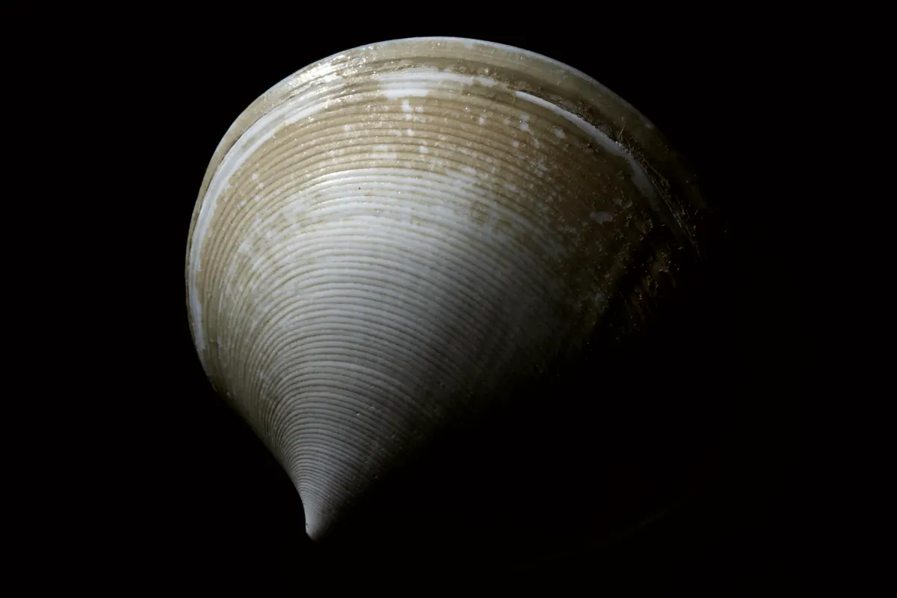
Litoral norte paulista
Olho-de-boi, robalo e vermelho chegam de Ubatuba na mesma manhã. O que não estiver no ponto simplesmente não é servido naquela noite.
A fusão não aparece no prato. Aparece na origem.
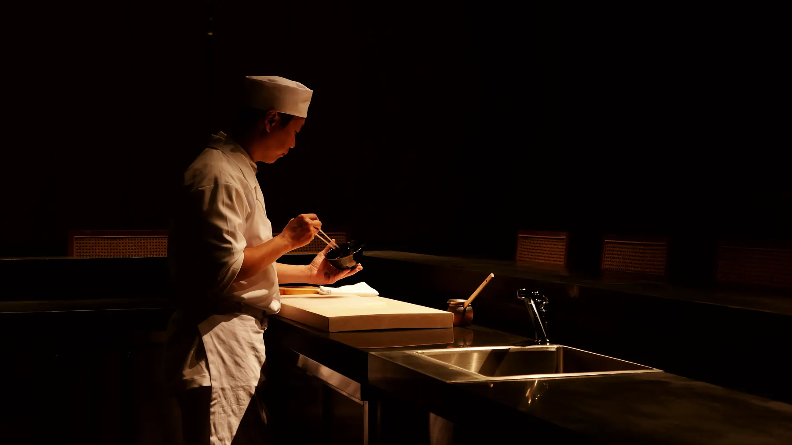
Haruo Sena, chef e proprietário
Nasceu em Registro, no interior de São Paulo, onde a primeira colônia japonesa do Brasil se instalou em 1913. Cresceu vendo o avô limpar peixe no quintal e achando aquilo comum.
Aos dezenove foi para Tóquio. Passou três anos carregando caixas em Tsukiji antes de encostar em uma faca, e mais oito atrás de um balcão de oito lugares em Nihonbashi, onde aprendeu que a diferença entre bom e memorável cabe em dois graus de temperatura.
Voltou em 2019 com uma ideia simples e difícil: fazer aquela cozinha aqui, com o que existe aqui. O Nagori abriu no ano seguinte, com doze lugares e nenhum cardápio fixo.
“Em Tóquio eu aprendi a repetir. Em São Paulo eu aprendi o que valia a pena repetir.”
Doze lugares, luz baixa, nenhuma música alta. O balcão é de cedro maciço, cortado em peça única, e envelhece um pouco a cada noite. Do lado de dentro, a cidade some.
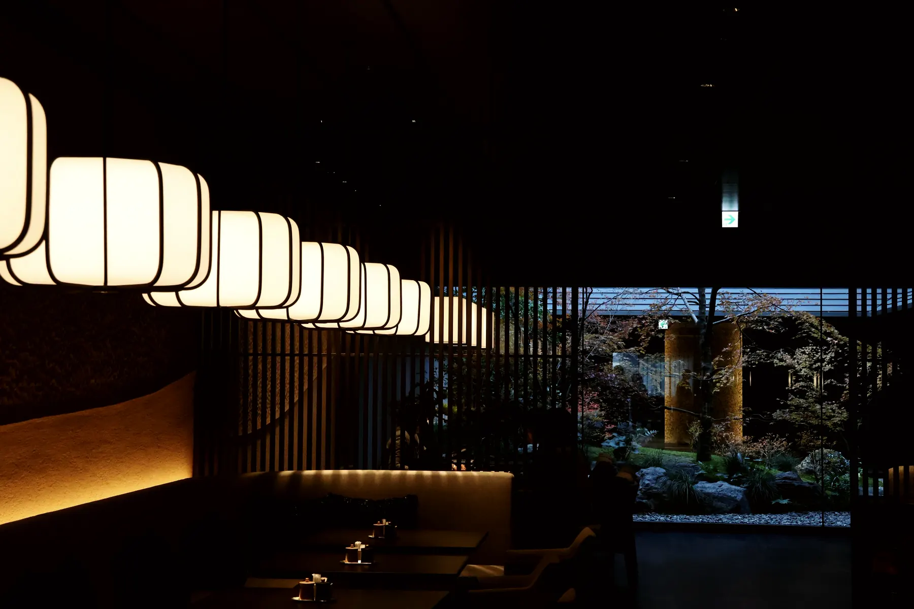
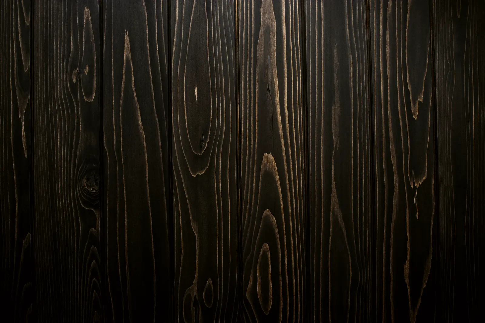
Uma experiência construída nos pequenos detalhes — da primeira peça de nigiri ao último gole de saquê.
Reservamos por sessão. Escolha a noite e o número de lugares; confirmamos por telefone em até duas horas.
Nossa equipe confirma por telefone em até duas horas. Se preferir, ligue para (11) 3062-0000.